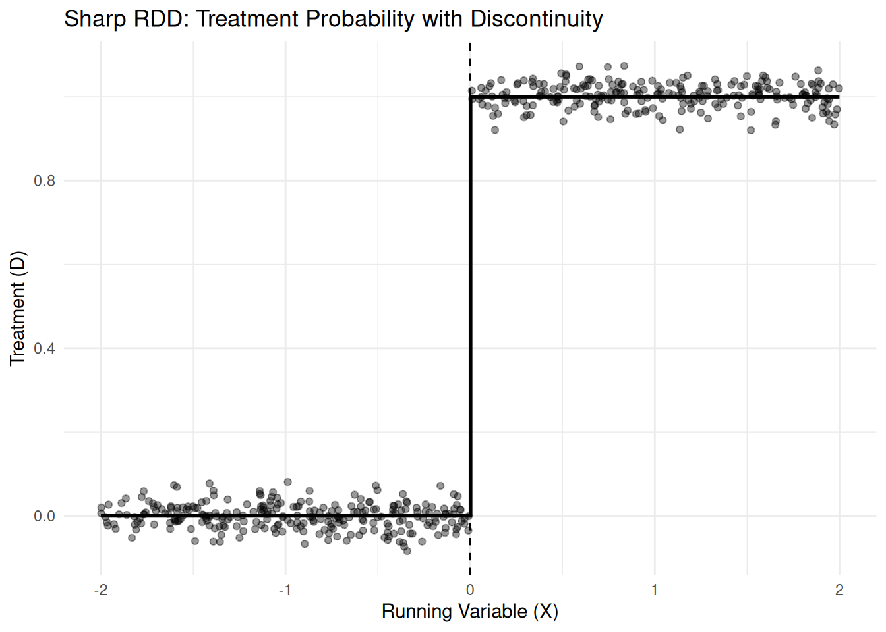
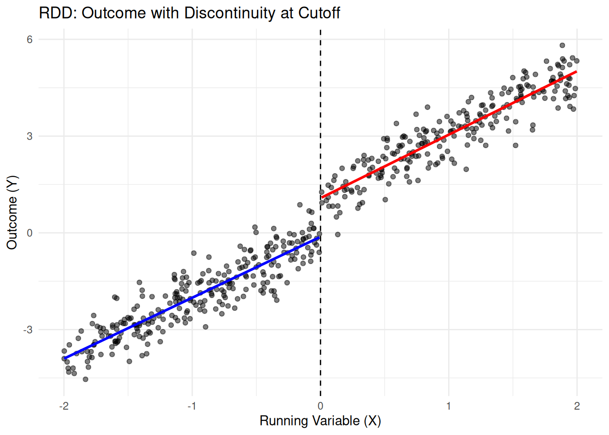
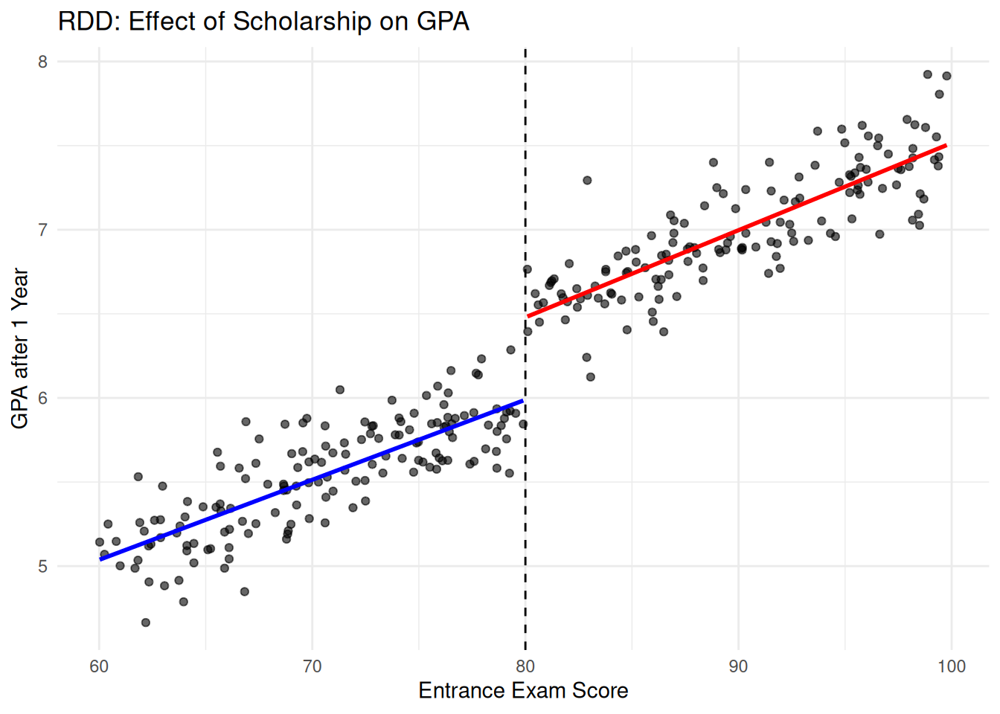
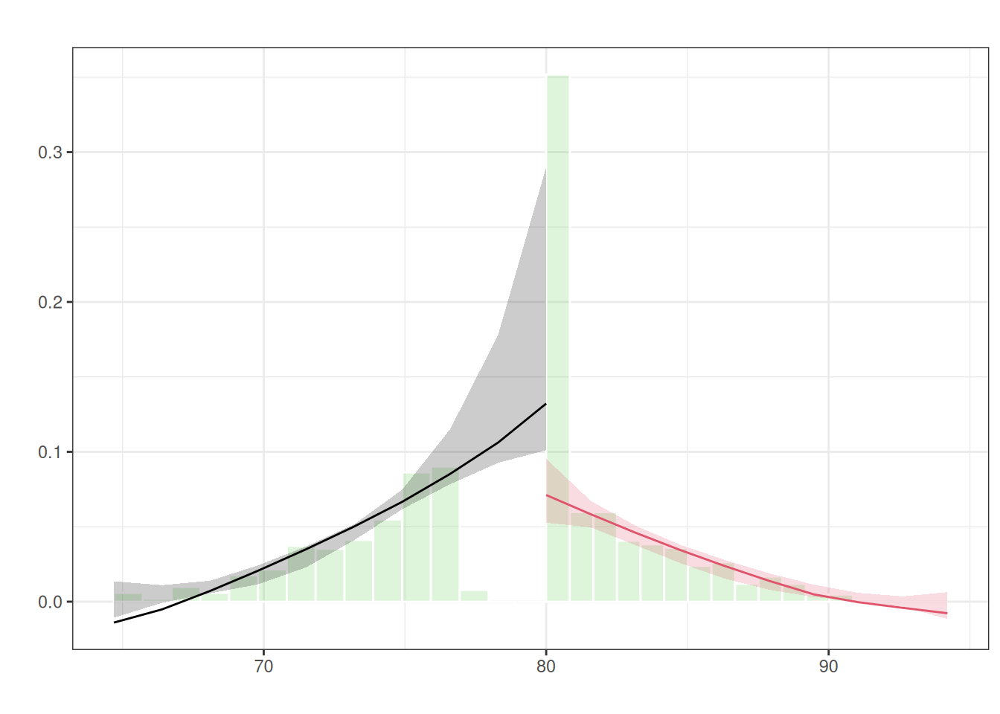

Warning: Using `size` aesthetic for lines was deprecated in ggplot2 3.4.0.
ℹ Please use `linewidth` instead.
The first identification strategy we have considered so far is the difference-in-differences approach. This method of causal inference uses panel data and, by comparing treated and untreated units over time, estimates the causal effects of a treatment on a given dependent variable. However, there are many situations in which tracking such groups over time is not feasible—for example, due to data limitations or because the treatment affects all individuals within a group.
For this reason, alternative strategies have been developed to analyze causal effects, such as regression discontinuity designs (RDD) and instrumental variables (IV).
These approaches rely on identifying variables that predict treatment assignment but are exogenous to other determinants of the outcome. In the case of RDD, exogeneity arises from the discrete nature of treatment assignment: in many contexts, treatment is determined by a cutoff rule, as is often the case in public policy. This discontinuity creates a sharp jump that allows us to compare very similar individuals on either side of the threshold—some receiving the treatment, others not—in order to estimate its causal impact. For example, legal drinking age or driving eligibility is determined by age thresholds: once an individual turns eighteen, they become eligible, regardless of other characteristics such as parental behavior, income, or education.
Instrumental variables rely on a different source of variation. An instrument is a variable that strongly predicts treatment assignment but does not directly affect the outcome, except through the treatment itself. In other words, the instrument is exogenous to the dependent variable and influences it only indirectly via the treatment. This approach is typically implemented using a two-stage regression procedure. In the first stage, the treatment variable is regressed on the instrument to isolate the variation in treatment that is driven by the instrument. In the second stage, the outcome variable is regressed on this predicted component of the treatment. This procedure allows us to recover a causal estimate even when the treatment is endogenous.
This session will first present regression discontinuity, then instrumental variables.
Regression discontinuity design (RDD) is an identification strategy that exploits discontinuities in treatment assignment rules to estimate causal effects. It applies in settings where treatment is determined by whether an observed running variable \(X\) crosses a known cutoff \(c\). The key idea is that units located very close to the cutoff are comparable in all respects except for their treatment status.
Under appropriate assumptions, any discontinuity in the outcome variable at the cutoff can therefore be attributed to the causal effect of the treatment.
The difference between sharp and fuzzy RDD lies in how treatment is assigned at the cutoff. In a sharp RDD, treatment assignment is perfectly deterministic: all units above the threshold receive the treatment, and all units below it do not. Examples include the legal drinking age—once a person turns 18, they are legally allowed to drink—and driving eligibility, where turning 16 or 18 (depending on the country) makes someone automatically eligible for a license. Other examples include scholarship programs with strict score thresholds, where all students above a cutoff receive the award.
In contrast, a fuzzy RDD occurs when the probability of receiving treatment jumps at the cutoff but is not deterministic. Some units do not comply, or other factors affect actual treatment. For instance, in college admissions, a student above a test score threshold may choose not to enroll or be prevented by financial constraints, while some students below the cutoff may still enroll via exceptions. Similarly, in subsidy programs, eligibility is determined by income or age thresholds, but not all eligible individuals take up the subsidy. Draft lotteries also illustrate a fuzzy design: a randomly assigned lottery number increases the probability of being drafted, but not everyone with a “drafted” number serves, and some with an “undrafted” number may still serve.
Once we understand the difference between sharp and fuzzy RDD, the intuition behind RDD is most clearly illustrated using a graph. On the horizontal axis, we plot the running variable \(X\), and on the vertical axis, the outcome variable \(Y\). The cutoff \(c\) is represented by a vertical line.
A sharp RDD arises when treatment assignment is a deterministic function of the running variable. Formally, treatment is defined as:
\[\begin{equation} D_i = 1\{X_i \geq c\} \end{equation}\]
so that all units with \(X_i \geq c\) receive the treatment, and none of those with \(X_i < c\) do.
The causal effect is identified by comparing the conditional expectation of the outcome variable on either side of the cutoff:
\[\begin{equation} \tau = \lim_{x \to c^+} \mathbb{E}[Y_i \mid X_i = x] - \lim_{x \to c^-} \mathbb{E}[Y_i \mid X_i = x] \end{equation}\]
This parameter captures the average treatment effect at the cutoff. Identification relies on the assumption that, in the absence of treatment, the conditional expectation of the outcome would be continuous at \(c\). In other words, units just above and just below the threshold would have had similar outcomes if neither group had been treated.
In practice, estimation is typically performed using local linear regressions on either side of the cutoff, restricting attention to observations within a bandwidth around \(c\). That is, estimating :
\[\begin{equation} Y_i = \alpha + \beta X_i + \delta D_i + \epsilon_i, \end{equation}\] where \(X_i\) is the running variable, and \(D_i\) is the treatment dummy.
The choice of bandwidth involves a bias-variance trade-off: narrower bandwidths improve comparability but reduce precision, while wider bandwidths increase precision at the cost of potentially introducing bias.
Each point on the graph corresponds to an observation. We then fit separate regression lines (or smooth curves) on either side of the cutoff. If the treatment has a causal effect on the running variable, we expect to observe a discontinuity—a jump—in the outcome at \(X = c\).
`geom_smooth()` using formula = 'y ~ x'
`geom_smooth()` using formula = 'y ~ x'
Crucially, the identification assumption implies that, absent treatment, the outcome would evolve smoothly through the cutoff.This assumption is called continuity at the cutoff assumption. Therefore, any observed jump at \(c\) can be attributed to the treatment rather than to underlying differences between units.
In practice, researchers often visualize this by plotting binned averages of \(Y\) against \(X\), along with fitted lines on each side of the cutoff. A clear discontinuity at the threshold provides visual evidence supporting the validity of the RDD design.
We want to study whether receiving a scholarship (hence, being funded for your studies) influences your results. We consider a scenario where a scholarship is awarded to students who score 80 or more on an entrance exam. The running variable is the exam score X, and the outcome is the GPA after one year. The scholarship is expected to increase GPA (because students work in better conditions), creating a discontinuity at the cutoff. We generate the data to obtain a smooth cutoff.
ggplot(df, aes(x = X, y = Y)) +
geom_point(alpha = 0.6) +
# Separate regression lines on each side of cutoff
geom_smooth(data = subset(df, X < cutoff), aes(x = X, y = Y), method = "lm", color = "blue", se = FALSE) +
geom_smooth(data = subset(df, X >= cutoff), aes(x = X, y = Y), method = "lm", color = "red", se = FALSE) +
# Vertical line at cutoff
geom_vline(xintercept = cutoff, linetype = "dashed") +
labs(
title = "RDD: Effect of Scholarship on GPA",
x = "Entrance Exam Score",
y = "GPA after 1 Year"
) +
theme_minimal()`geom_smooth()` using formula = 'y ~ x'
`geom_smooth()` using formula = 'y ~ x'
Students just above and just below the cutoff (a score of 80 on the entrance exam) are comparable, except for scholarship receipt. The jump in GPA at the cutoff can therefore be interpreted as the causal effect of the scholarship, assuming that no other factors change discontinuously at that score.
A first way to estimate the LATE (local average treatment effect) is to define a bandwidth, \(bd\), around the cutoff of the running variable within which the estimation is performed. For instance, one might consider only observations within 10 points of the cutoff. A larger bandwidth increases the sample size and thus the statistical precision of the estimates, but it also raises the risk of bias, as students farther from the cutoff may no longer be truly comparable.
Two examples of LATE estimation are provided below: one using a very small bandwidthand the other a much larger one, illustrating the trade-off between bias and precision.
\[\begin{equation} Y_i (h) = \alpha + \beta X_i (h) + \delta D_i + \epsilon_i \end{equation}\]
library(tidyverse)── Attaching core tidyverse packages ──────────────────────── tidyverse 2.0.0 ──
✔ dplyr 1.2.1 ✔ readr 2.1.6
✔ forcats 1.0.1 ✔ stringr 1.6.0
✔ lubridate 1.9.4 ✔ tibble 3.3.1
✔ purrr 1.2.2 ✔ tidyr 1.3.2
── Conflicts ────────────────────────────────────────── tidyverse_conflicts() ──
✖ dplyr::filter() masks stats::filter()
✖ dplyr::lag() masks stats::lag()
ℹ Use the conflicted package (<http://conflicted.r-lib.org/>) to force all conflicts to become errorslibrary(MASS)
Attaching package: 'MASS'
The following object is masked from 'package:dplyr':
selectlibrary(stargazer)
Please cite as:
Hlavac, Marek (2022). stargazer: Well-Formatted Regression and Summary Statistics Tables.
R package version 5.2.3. https://CRAN.R-project.org/package=stargazer # Define the bandwidth
h <- 10
# Subset data within ±0.2 of the threshold
rd_data1<- df |>
filter(abs(X - 80) <= h)
rd_data2<- df |>
filter(abs(X - 80) <= 0.1*h)
# Create running variable centered at the threshold
rd_data1 <- rd_data1 |>
mutate(
centered_X = X - 80, # Centering at the threshold
treatment = if_else(X >= 80, 1, 0) # Treatment indicator
)
rd_data2 <- rd_data2 |>
mutate(
centered_X = X - 80, # Centering at the threshold
treatment = if_else(X >= 80, 1, 0) # Treatment indicator
)
# Estimate local linear regression with interaction
rd_model1 <- lm(Y~ treatment + centered_X, data = rd_data1)
rd_model2 <- lm(Y~ treatment + centered_X, data = rd_data2)
rd_model3 <- rlm(Y~ treatment + centered_X, data = rd_data2)
#Compare the models
stargazer(rd_model1, rd_model2, rd_model3, type = "text")
===================================================================================
Dependent variable:
---------------------------------------------------------------
Y
OLS robust
linear
(1) (2) (3)
-----------------------------------------------------------------------------------
treatment 0.573*** 0.691** 0.682***
(0.061) (0.231) (0.178)
centered_X 0.041*** -0.014 -0.004
(0.005) (0.182) (0.140)
Constant 5.965*** 5.873*** 5.868***
(0.033) (0.140) (0.108)
-----------------------------------------------------------------------------------
Observations 156 14 14
R2 0.885 0.806
Adjusted R2 0.884 0.770
Residual Std. Error 0.184 (df = 153) 0.185 (df = 11) 0.092 (df = 11)
F Statistic 591.223*** (df = 2; 153) 22.789*** (df = 2; 11)
===================================================================================
Note: *p<0.1; **p<0.05; ***p<0.01The results indeed give you values around 0.5, as expected : the causal estimate through RDD is therefore of 0.5 (the increase in GPA after one year, for those who received the scholarship).
If you don’t wath to bother with the data preparation, you can compute the RDD estimate of the causal effect of the scholarship by calling rdrobust() from the library rdrobust, which only requires you to specify the following variables :
It will then compute robust estimates of your causal effect.
library(rdrobust)
library(rddtools)Loading required package: AERLoading required package: carLoading required package: carData
Attaching package: 'car'The following object is masked from 'package:dplyr':
recodeThe following object is masked from 'package:purrr':
someLoading required package: lmtestLoading required package: zoo
Attaching package: 'zoo'The following objects are masked from 'package:base':
as.Date, as.Date.numericLoading required package: sandwichLoading required package: survivalLoading required package: npNonparametric Kernel Methods for Mixed Datatypes (version 0.60-20)
[vignette("np_faq",package="np") provides answers to frequently asked questions]
[vignette("np",package="np") an overview]
[vignette("entropy_np",package="np") an overview of entropy-based methods]
Please consider citing R and rddtools,
citation()
citation('rddtools')# Parameters
# Run robust RDD
rdd_result <- rdrobust(y = df$Y, x = df$X, c = cutoff, h = 10) # h = points allows to specify the number of points
# Print summary
summary(rdd_result)Sharp RD estimates using local polynomial regression.
Number of Obs. 300
BW type Manual
Kernel Triangular
VCE method NN
Number of Obs. 155 145
Eff. Number of Obs. 82 74
Order est. (p) 1 1
Order bias (q) 2 2
BW est. (h) 10.000 10.000
BW bias (b) 10.000 10.000
rho (h/b) 1.000 1.000
Unique Obs. 155 145
=====================================================================
Point Robust Inference
Estimate z P>|z| [ 95% C.I. ]
---------------------------------------------------------------------
RD Effect 0.631 7.375 0.000 [0.540 , 0.931]
=====================================================================If you do not specify the value of\(h\), the function automatically selects an optimal bandwidth based on statistical criteria that optimally balance bias and variance.
library(rdrobust)
library(rddtools)
# Parameters
# Run robust RDD
rdd_result <- rdrobust(y = df$Y, x = df$X, c = cutoff) # h = points allows to specify the number of points
# Print summary
summary(rdd_result)Sharp RD estimates using local polynomial regression.
Number of Obs. 300
BW type mserd
Kernel Triangular
VCE method NN
Number of Obs. 155 145
Eff. Number of Obs. 49 38
Order est. (p) 1 1
Order bias (q) 2 2
BW est. (h) 5.606 5.606
BW bias (b) 10.283 10.283
rho (h/b) 0.545 0.545
Unique Obs. 155 145
=====================================================================
Point Robust Inference
Estimate z P>|z| [ 95% C.I. ]
---------------------------------------------------------------------
RD Effect 0.695 7.033 0.000 [0.525 , 0.931]
=====================================================================The main identifying assumption of RDD is the continuity at the cutoff assumption - that is, in the absence of treatment, the dependent variable \(Y\) would have followed a continuous trend at the cutoff. Hence, the effect is only due to the treatment. To prove this, different robustness checks can be performed.
Covariate continuity tests: check that observable characteristics (e.g., age, gender, prior grades) evolve smoothly at the cutoff. This can be done by using the same functions as before, with other dependent variables.
McCrary density test: test whether the density of the running variable is continuous at the cutoff, which helps detect manipulation or sorting around the threshold. It could be the case for instance if some students who scored just below 80 (say 78–79 points) bribed the teacher or found ways to retake part of the exam, or strategically delayed grading to barely cross 80. Then the density around 80 would be discontinuous.
#install.packages("rddensity")
# Load packages
library(rddensity)
library(ggplot2)
set.seed(123)
# Parameters
n <- 500
cutoff <- 80
# Simulate running variable X (exam score)
# Normal distribution around 75–85
X <- rnorm(n, mean = 78, sd = 5)
# Introduce manipulation: add "bunching" just above the cutoff
# Students who scored 78–79 get bumped to 80
manipulated <- X > 77 & X < cutoff
X[manipulated] <- cutoff
# Simulate outcome variable Y (GPA), continuous around 3.0
Y <- 2.5 + 0.03 * X + rnorm(n, 0, 0.2)
df <- data.frame(X, Y)
# Run McCrary density test
dens_test <- rddensity(X = df$X, c = cutoff)
# Summary
summary(dens_test)
Manipulation testing using local polynomial density estimation.
Number of obs = 500
Model = unrestricted
Kernel = triangular
BW method = estimated
VCE method = jackknife
c = 80 Left of c Right of c
Number of obs 212 288
Eff. Number of obs 203 286
Order est. (p) 2 2
Order bias (q) 3 3
BW est. (h) 12.117 10.839
Method T P > |T|
Robust -2.3671 0.0179 Warning in summary.CJMrddensity(dens_test): There are repeated observations.
Point estimates and standard errors have been adjusted. Use option
massPoints=FALSE to suppress this feature.
P-values of binomial tests (H0: p=0.5).
Window Length <c >=c P>|T|
3.328 + 3.328 20 214 0.0000
4.305 + 4.163 60 230 0.0000
5.281 + 4.997 101 245 0.0000
6.258 + 5.832 124 255 0.0000
7.234 + 6.666 143 266 0.0000
8.211 + 7.501 163 270 0.0000
9.187 + 8.335 180 278 0.0000
10.164 + 9.170 190 283 0.0000
11.140 + 10.004 200 285 0.0001
12.117 + 10.839 203 286 0.0002# Plot the density
rdplotdensity(dens_test, X = df$X)
$Estl
Call: lpdensity
Sample size 212
Polynomial order for point estimation (p=) 2
Order of derivative estimated (v=) 1
Polynomial order for confidence interval (q=) 3
Kernel function triangular
Scaling factor 0.424849699398798
Bandwidth method user provided
Use summary(...) to show estimates.
$Estr
Call: lpdensity
Sample size 288
Polynomial order for point estimation (p=) 2
Order of derivative estimated (v=) 1
Polynomial order for confidence interval (q=) 3
Kernel function triangular
Scaling factor 0.577154308617234
Bandwidth method user provided
Use summary(...) to show estimates.
$Estplot
Placebo cutoffs: estimate the RDD at fake cutoffs where no treatment occurs; no discontinuity should be found.
Varying bandwidths: verify that results are robust to different choices of bandwidth.
Varying polynomial orders: check that results are not driven by a specific functional form, by changing the order of the estimation in the argument of the function p =.
In instrumental variables (IV) estimation, the logic is slightly different. Imagine you want to measure the causal effect of a treatment or policy on an outcome. A typical problem is endogeneity: the treatment is correlated with unobserved factors that also affect the outcome.
For example, suppose you want to estimate the effect of scholarship receipt on GPA. Students who apply or are selected for the scholarship may differ in unobserved ways (motivation, prior effort) from those who do not, creating bias in a simple regression.
An instrumental variable is a variable that:
In this context, the IV estimate corresponds to a local average treatment effect (LATE) — the effect for the subpopulation whose treatment status is influenced by the instrument. This is summarised on the figure below.
flowchart LR
U[Unobserved Confounders] --> X[Endogenous Variable]
U --> Y[Outcome]
Z[Instrument] --> X
X --> Y
To compute the local average treatment effect (LATE), we generally use two-stage least squares (2SLS) regressions.
1.First stage: regress the treatment variable \(D_i\) on the instrument \(Z_i\):
\[\begin{equation} D_i = \alpha + \beta Z_i + \epsilon_i \end{equation}\]
This captures how the instrument affects the treatment.
\[\begin{equation} Y_i = \alpha + \beta X_i+ \delta \hat{D}_i + \epsilon_i \end{equation}\]
By using \(\hat{D}_i\) instead of \(D_i\), you isolate the variation in \(D\) that is due only to the exogenous instrument, removing endogeneity bias. The coefficient \(\delta\) then estimates the causal effect of the treatment on the outcome — the LATE.
A typical example of an instrumental variable (IV) approach is analyzing the effect of education on earnings. Since more educated individuals tend to have higher earnings, there are many factors that could influence both education and earnings—these are omitted variables, such as individual ability, family background, and motivation, which are difficult or impossible to measure.
Measuring the causal effect of education therefore often requires the use of instrumental variables to isolate exogenous variation in education. For example, some authors have argued that a good IV for educational attainment is the distance to the nearest college.
The logic is the following. Students living closer to a college are more likely to obtain additional schooling, but the distance itself is unlikely to directly affect future earnings, satisfying the IV assumptions of relevance and exclusion. Of course, one could argue that distance to college is perhaps correlated with variables influencing both the outcome and the treatment : that is, education of parents, or income of the parents, etc. These variables can be controlled for, to keep only the instrument in the regression.
The IV can be computed in three different ways : - Using two successive linear regressions; - Using the ivreg function from the AER package - Using the iv_robust function from the estimatr package
I simulate data here to analyse the impact of education on earnings, using distance to college as my instrument.
# Load required package
library(AER) # For ivreg (2SLS)
library(estimatr)
set.seed(123)
# Sample size
n <- 500
# Instrument: distance to nearest college (in km, exogenous)
distance_to_college <- runif(n, 0, 50) # 0 = very close, 50 = far
# Unobserved confounder: ability or motivation
ability <- rnorm(n, 0, 1)
# Treatment: years of education (depends on distance and ability)
# Students closer to college tend to get more education
education <- 12 + 0.05 * (50 - distance_to_college) + 0.8 * ability + rnorm(n, 0, 1)
# education is continuous: years of schooling
# Outcome: earnings (depends on education and ability)
earnings <- 20000 + 1500 * education + 5000 * ability + rnorm(n, 0, 5000)
# Combine into a data frame
df <- data.frame(earnings, education, distance_to_college, ability)
# Quick look
head(df) earnings education distance_to_college ability
1 45909.00 15.01900 14.378876 -0.37560287
2 38260.18 11.97003 39.415257 -0.56187636
3 41019.36 13.71389 20.448846 -0.34391723
4 41251.12 12.57881 44.150870 0.09049665
5 54311.44 13.24152 47.023364 1.59850877
6 35838.17 14.19486 2.277825 -0.08856511# Naive OLS (biased because of ability confounding)
lm_first <- lm(education ~ distance_to_college, data = df)
df$fitted_educ <- lm_first$fitted.values
ivcom <- lm(earnings ~ fitted_educ, data = df)
summary(ivcom)
Call:
lm(formula = earnings ~ fitted_educ, data = df)
Residuals:
Min 1Q Median 3Q Max
-25795.3 -5499.6 518.1 5419.4 22921.3
Coefficients:
Estimate Std. Error t value Pr(>|t|)
(Intercept) 25102.2 7044.6 3.563 0.000401 ***
fitted_educ 1140.4 528.9 2.156 0.031537 *
---
Signif. codes: 0 '***' 0.001 '**' 0.01 '*' 0.05 '.' 0.1 ' ' 1
Residual standard error: 8360 on 498 degrees of freedom
Multiple R-squared: 0.00925, Adjusted R-squared: 0.007261
F-statistic: 4.65 on 1 and 498 DF, p-value: 0.03154# 2SLS using distance as instrument
iv_model <- ivreg(earnings ~ education | distance_to_college, data = df)
iv_model2 <- iv_robust(earnings ~ education | distance_to_college, data = df)
summary(iv_model, diagnostics = TRUE)
Call:
ivreg(formula = earnings ~ education | distance_to_college, data = df)
Residuals:
Min 1Q Median 3Q Max
-25205.8 -5259.7 446.7 5096.0 20841.8
Coefficients:
Estimate Std. Error t value Pr(>|t|)
(Intercept) 25102.2 6382.8 3.933 9.59e-05 ***
education 1140.4 479.2 2.380 0.0177 *
Diagnostic tests:
df1 df2 statistic p-value
Weak instruments 1 498 150.08 < 2e-16 ***
Wu-Hausman 1 497 31.63 3.12e-08 ***
Sargan 0 NA NA NA
---
Signif. codes: 0 '***' 0.001 '**' 0.01 '*' 0.05 '.' 0.1 ' ' 1
Residual standard error: 7574 on 498 degrees of freedom
Multiple R-Squared: 0.1867, Adjusted R-squared: 0.185
Wald test: 5.664 on 1 and 498 DF, p-value: 0.01769 summary(iv_model2)
Call:
iv_robust(formula = earnings ~ education | distance_to_college,
data = df)
Standard error type: HC2
Coefficients:
Estimate Std. Error t value Pr(>|t|) CI Lower CI Upper DF
(Intercept) 25102 6414.4 3.913 0.0001036 12499.6 37705 498
education 1140 481.6 2.368 0.0182798 194.1 2087 498
Multiple R-squared: 0.1867 , Adjusted R-squared: 0.185
F-statistic: 5.606 on 1 and 498 DF, p-value: 0.01828There a few statistical tests you can run to verify the design of your IV. It is mostly theoretically driven : hence a good instrument should be ‘weird’ and seem indeed unrelated to your dependent variable. There are three conditions an instrument should verify, that are described here.
A key requirement for a valid instrument is relevance: the instrument must be strongly correlated with the treatment, in this case, educational attainment. In our example, distance to the nearest college directly influences the likelihood that an individual pursues additional schooling. Individuals who live closer to a college tend to have more years of education. This relationship can be formally assessed by regressing education on the instrument: if the coefficient on distance is significant and the first-stage F-statistic exceeds the commonly used threshold of 10, the instrument can be considered sufficiently relevant for a reliable IV estimate. Without a strong correlation, the exogenous variation in education induced by the instrument would be too weak, making the IV estimate unstable and uninformative.
You can easily check the strength and relevance of your estimates using diagnostics.
The second key condition is the exclusion restriction, which requires that the instrument affects the outcome only through its effect on the treatment. In this context, the distance to college should not directly influence future earnings except through its impact on educational attainment. Theoretically, this assumption is plausible: simply living closer to a college does not directly alter labor market opportunities or wages, except by affecting the number of years of schooling. However, it is important to note that the exclusion restriction cannot be directly tested statistically with a single instrument. Its plausibility must rely on a strong theoretical argument, and it can be indirectly supported by controlling for other variables that might correlate with distance to college, such as the parent’s level of education, earnings, local socioeconomic conditions or the quality of nearby schools.